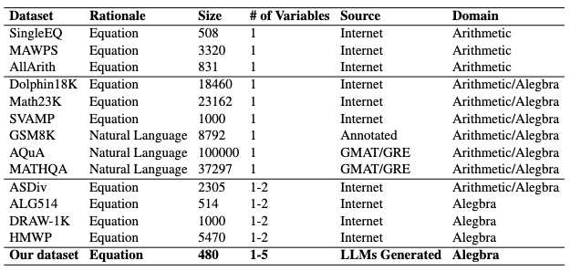
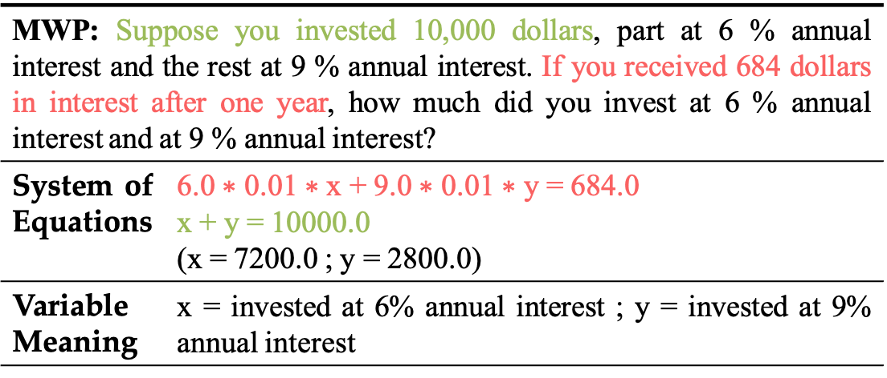
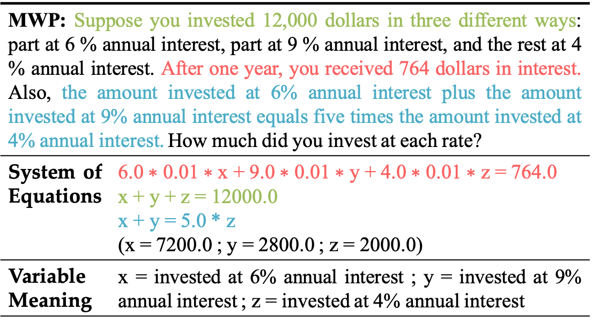
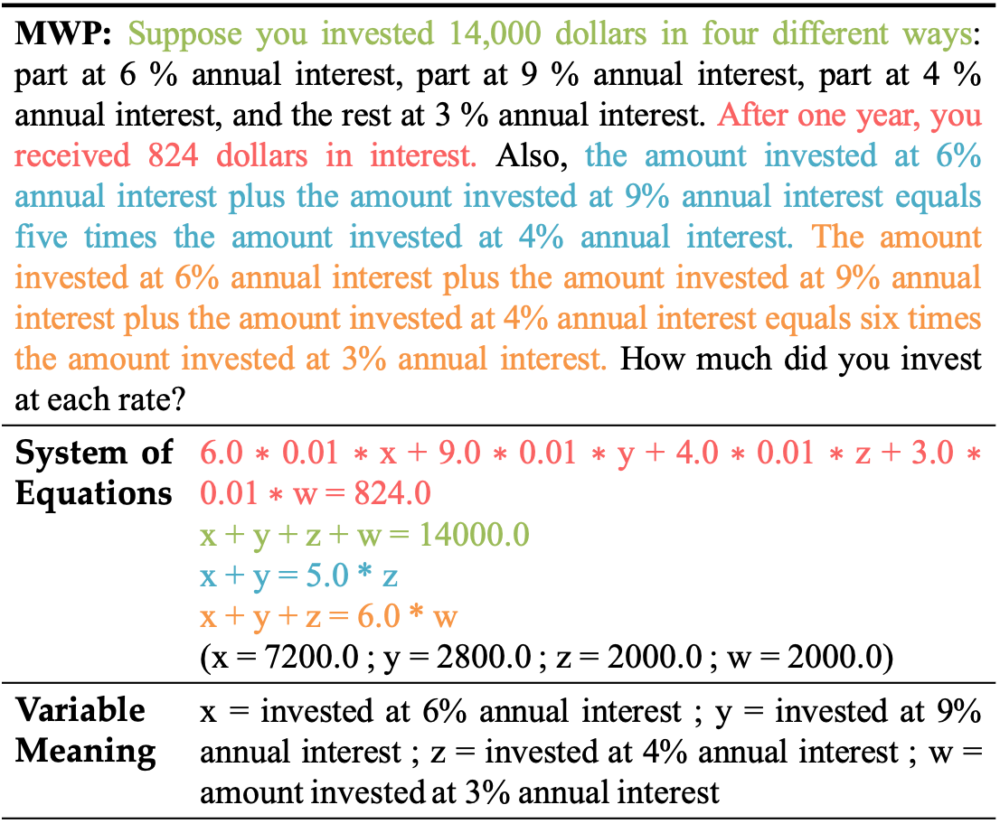
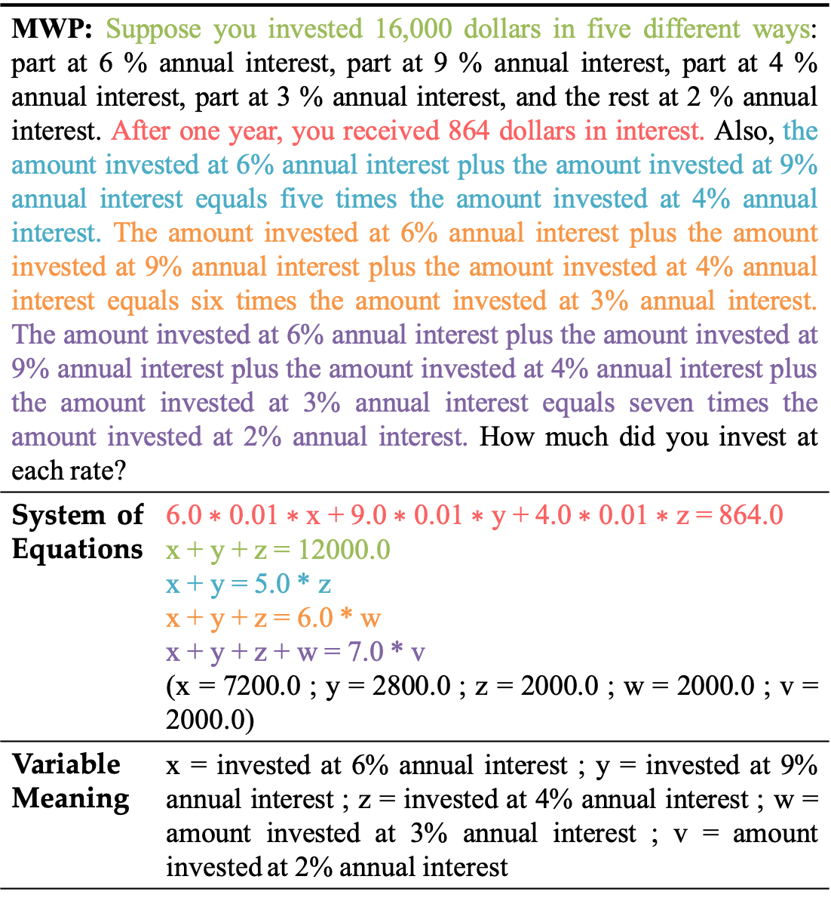

Accuracy scores (%) on the BeyondX.
Overview
BeyondX is a consolidated mathematical reasoning benchmark within
multi-unknown.
In total,
BeyondX includes 464 examples automatically generated from 2
different source
datasets (ALG514, DRAW-1k).
All the data examples were divided into three subsets: BeyondX_3 (194), BeyondX_4 (158), and BeyondX_5 (112).
You can download the dataset on Hugging Face
Dataset.

How to generate multiple unknown algebra problems via prompting?

Full instruction on how to generate multiple unknown algebra problems via prompting?

Summary of the different math datasets in BeyondX.
Examples
One example for each unknown in BeyondX

Two-unknown (source problem)

Three-unknown

Four-unknown

Five-unknown